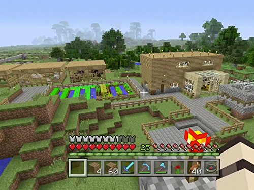

About Minecraft: The Ultimate Sandbox Game
Minecraft is a game that has revolutionized the gaming industry with its simple yet incredibly deep mechanics. It was originally created by Markus "Notch" Persson and later developed by Mojang Studios, eventually being acquired by Microsoft. Since its release in 2011, it has sold over 200 million copies and continues to attract millions of active players each month. The game's charm lies in its blocky graphics, endless possibilities, and the freedom to play however you like. Whether you prefer to build, explore, or survive, Minecraft offers an experience tailored to your playstyle. With new updates constantly adding fresh content, Minecraft remains as popular today as it was at launch.
The Origins of Minecraft
Minecraft started as a small independent project but quickly became one of the most well-known games in history. Inspired by games like Infiniminer and Dwarf Fortress, Notch aimed to create a world where players could build, explore, and interact freely. The game was first released in a pre-alpha state in 2009, allowing early players to test and shape its development. By the time Minecraft 1.0 launched in 2011, it had already built a massive fanbase. Microsoft saw its potential and acquired Mojang Studios for $2.5 billion in 2014, ensuring continued growth and innovation. Today, Minecraft is played by people of all ages and has influenced countless other games.
Click here to play the free alpha version in your browser!

Core Gameplay: What Makes Minecraft Special?
🛠Mining and Crafting At its core, Minecraft is about gathering resources and crafting useful tools, armor, and structures. Players start with nothing and must chop wood, mine stone, and craft tools to survive.
🌠Infinite Worlds to Explore Minecraft worlds are procedurally generated, meaning no two worlds are ever the same. Players can discover vast deserts, dense jungles, frozen tundras, and deep caves filled with hidden treasures.
⚔️ Survival and Adventure In Survival Mode, players must hunt for food, craft weapons, and battle monsters like zombies, skeletons, and creepers. For those looking for a challenge, Hardcore Mode adds permanent death—once you die, it's game over!
🗠Creative Building For those who prefer creativity over combat, Creative Mode offers unlimited resources and the ability to fly. This mode is perfect for building castles, cities, pixel art, and even working computers using Redstone!
🮠Multiplayer and Servers Minecraft is even better with friends! Players can join online servers, explore adventure maps, and participate in mini-games like BedWars, SkyBlock, and Hunger Games.
⚙️ Mods and Customization With thousands of mods available, Minecraft can be completely transformed with new biomes, mobs, game mechanics, and textures. From medieval RPG mods to futuristic sci-fi worlds, the possibilities are endless.
You can learn more in the wiki here.
Why Millions Love Minecraft
- ✔ It Encourages Creativity – There are no limits to what you can build.
- ✔ Endless Replayability – Every world is different, and new updates keep things fresh.
- ✔ Great for All Ages – Whether you're 5 or 50, Minecraft is fun for everyone.
- ✔ Educational Benefits – Used in classrooms to teach coding, engineering, and problem-solving.
- ✔ A Strong Community – Millions of players, content creators, and modders keep the game alive.